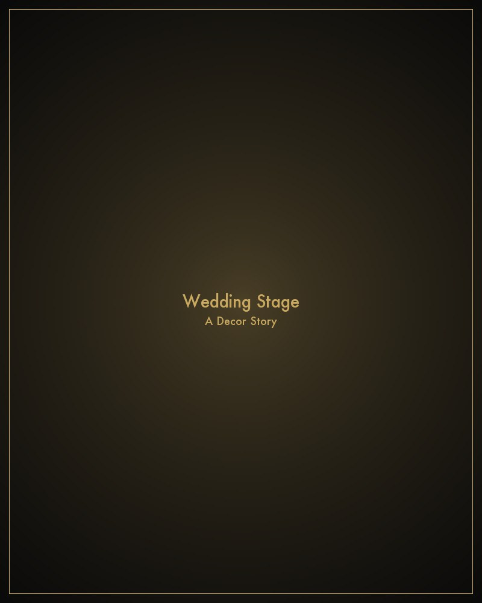
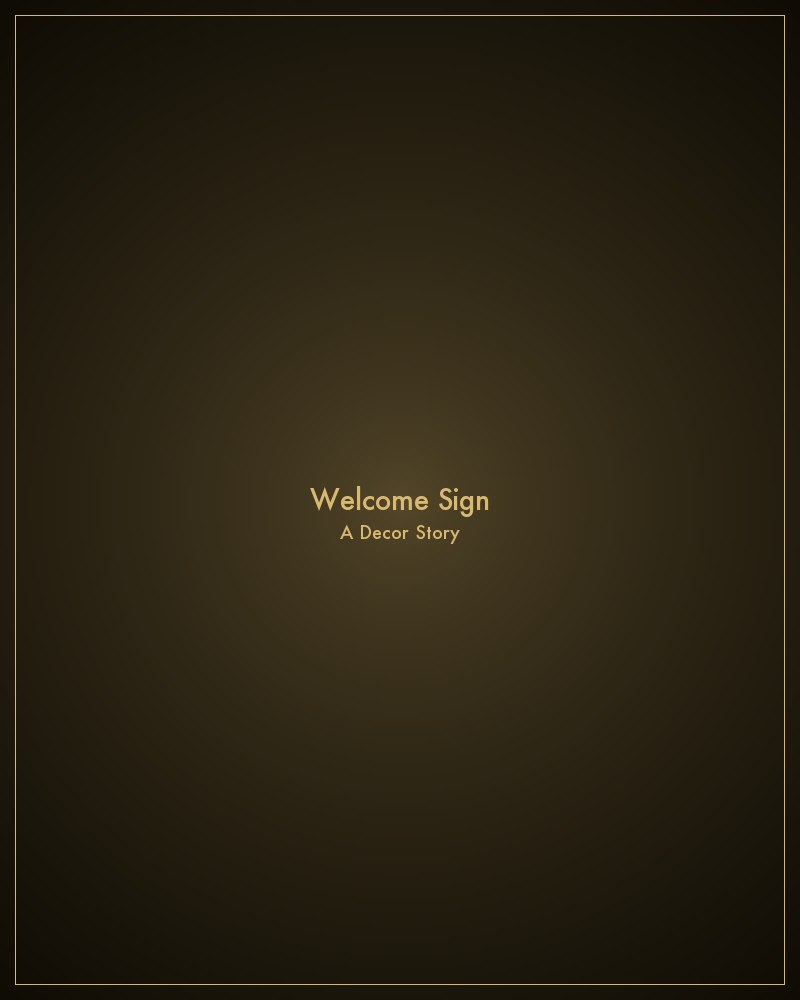
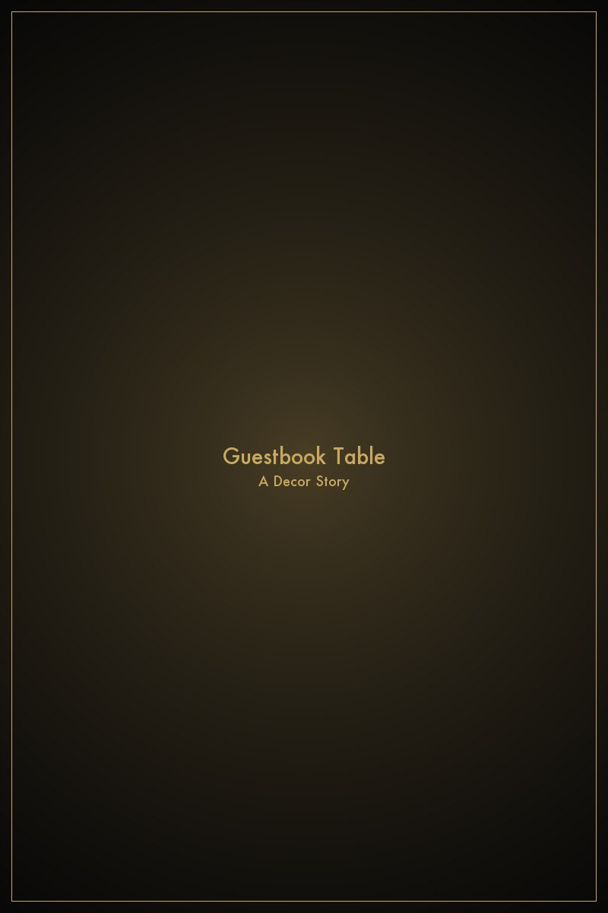
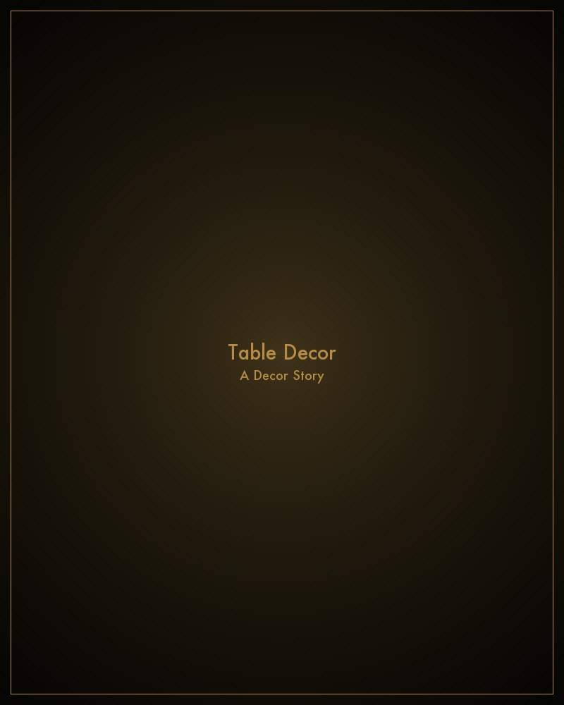

Our Services

Wedding & Nikkah Stages
Your stage is where the day truly begins — the place where every photograph is taken, where vows are exchanged, and where your guests' eyes are drawn from the moment they walk through the door. We design and build stages that are entirely your own: bespoke structures shaped around your vision, your colour palette, and the mood you want to create.
Whether you are envisioning a softly draped floral arch for an intimate Nikkah or a grand framed backdrop for a wedding reception of several hundred guests, we approach each brief with the same level of care and intention. We bring the expertise; you bring the story.
Our stages are built to be photographed from every angle and dismantled without a trace, leaving your venue exactly as we found it.

Welcome Signs
A welcome sign is the first thing your guests encounter — a small but significant detail that sets the tone for everything that follows. We design ours to feel like a natural extension of your overall aesthetic: elegant, personal, and beautifully crafted.
From acrylic panels to framed prints and freestanding easel displays, each sign is finished by hand and tailored to your wording, font preferences, and colour scheme. We can incorporate your names, your date, or a short verse that means something to you — the brief is yours to set.
We also offer coordinating table number signs, seating charts, and order-of-service boards, so that every written detail of your day feels cohesive and considered.

Guestbook Tables
The guestbook table is one of the most overlooked spaces at a wedding — and one of the most treasured once the day is over. We style it as a destination in its own right: an inviting, beautifully laid surface that encourages your guests to pause, reflect, and leave their words for you.
We work with a range of formats, from classic bound books and Polaroid display frames to fingerprint trees and letter-to-the-couple envelopes. Each table is styled with fresh or preserved florals, coordinating stationery, and any personal touches you would like to include.
The result is a space that photographs beautifully and delivers something deeply personal to take home once the celebrations are over.

Table Decoration
A beautifully decorated table does more than look impressive in the photographs — it creates the atmosphere your guests sit inside for hours. The centrepieces, the linens, the candle heights, the scattered details: together they define whether a room feels luxurious, intimate, joyful, or all three at once.
We design complete table schemes that work across your entire venue, whether that is ten tables or a hundred. Each arrangement is bespoke to your brief, drawing from a curated palette of fresh florals, preserved botanicals, candles, and decorative accents.
We handle every aspect of the styling, arriving well before your guests and leaving the room exactly as we found it once the evening is over.